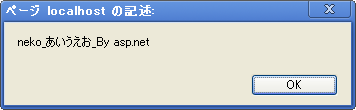

Asp.NETで作成したサーバーサイドのプログラムへ、POSTデータを非同期通信で送る。
テスト
asp url :送信側（*.html)
//☆AJAX非同期通信
$.ajax({
type: "POST",
url: "http://localhost:3783/PostTest.aspx",
data: "key1=neko&key2=あいうえお",
cache: false,
dataType: "text",
success: function(data, type) {
alert(data);
},
error: function(xmlHttpRequest, textStatus, errorThrown){
alert(textStatus);
}
});
受信側であるサーバーサイド(PostText.aspx.cs)
protected void Page_Load(object sender, EventArgs e)
{
Response.AppendHeader("Access-Control-Allow-Origin", "*");//クロスドメイン通信を許可する。
//▽POSTからデータを取得する。
string key1 = Request.Form["key1"];
string key2 = Request.Form["key2"];
//▽データを書き出す。
string msg = key1 + "_" + key2 + "_By asp.net";
Page.Controls.Add(new LiteralControl(msg));
}
受信側であるサーバーサイド(PostText.aspx)
<%@ Page Language="C#" AutoEventWireup="true" CodeBehind="PostTest.aspx.cs" Inherits="Test2.PostTest" %>
※Asp.NET用の設定関連以外は、空白である。
runボタンを押したときのダイアログ
